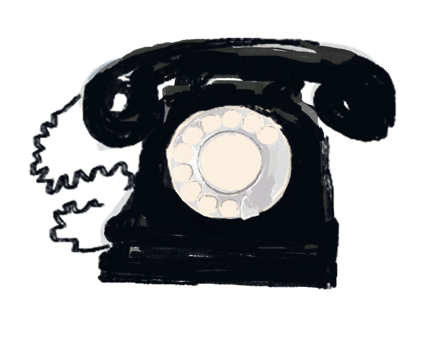

Portfolio and sketchbook
add scribbles and marks to the deckled paper, light sketches, maybe even watercolour sketches and pieces of gum tape?


luonnoskirjat ovat hauskoja
A tower of green, glittering in affixed jewels
bouncing on the breeze, circled by birds, judges of deeds, collared with gold. Fish swim below, salmon and trout go rushing beneath glorious colour, on a white hill spread with waxy mists pierced and parted by sunlight and rain.
 Behind the doors windowed with coloured glass were cradles of waxy crops of pears and apples from the orchard, and the botanist took some that were plump and just starting to turn, peeled them at the outdoor sink, took them inside to dice them, simmered the white flesh in a pan and some water - with a bit of brown sugar and a handful of sultanas and half a teaspoon of cinnamon - and put the pieces in a bowl with some fresh yoghurt for Tabea to eat alongside some new, clean honey to dress the sting with. Which she did, and immediately felt much better.
Behind the doors windowed with coloured glass were cradles of waxy crops of pears and apples from the orchard, and the botanist took some that were plump and just starting to turn, peeled them at the outdoor sink, took them inside to dice them, simmered the white flesh in a pan and some water - with a bit of brown sugar and a handful of sultanas and half a teaspoon of cinnamon - and put the pieces in a bowl with some fresh yoghurt for Tabea to eat alongside some new, clean honey to dress the sting with. Which she did, and immediately felt much better.
, what form>?
A buzzing bee, a burin
